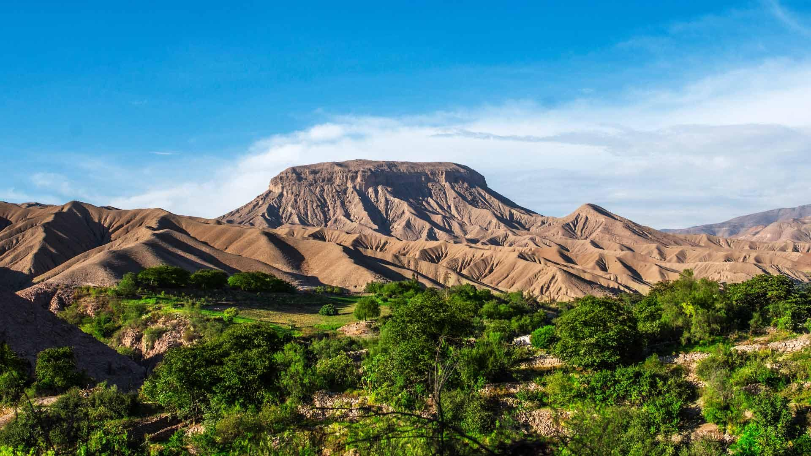

Mariscal Nieto
Cerro Baúl
Formación natural ubicada en Torata, reconocida por su cima plana y su importancia arqueológica.
Fue un importante asentamiento de la cultura Wari y ofrece una vista panorámica del valle de Torata y sus alrededores.
Conoce más de Cerro Baúl